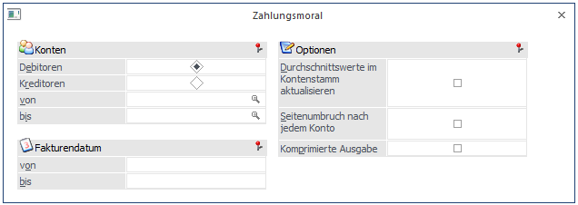
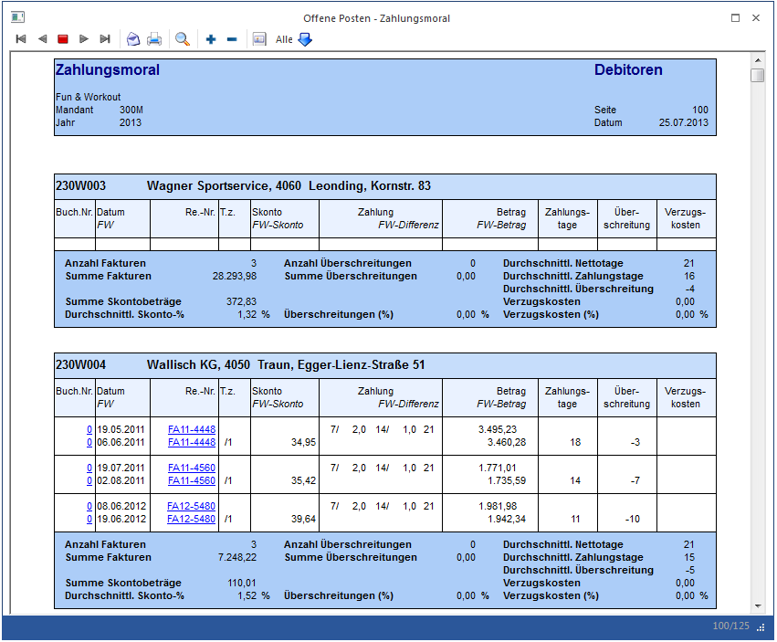
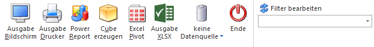

Über den Menüpunkt
1 Auswertungen
1 Offene Posten
1 Zahlungsmoral
kann eine Liste der Zahlungsmoral von Kunden ausgewertet werden.

Einschränkungen
Ø Debitoren / Kreditoren
Dieser Radiobutton steuert die Ausgabe der Zahlungsmoral für die Debitoren bzw. für die Kreditoren. Standardmäßig ist der Radiobutton auf "Debitoren" voreingestellt.
Ø von / bis
Je nachdem ob Debitoren oder Kreditoren ausgewertet werden sollen, werden im Matchcode Debitoren oder Kreditoren gesucht und kann hierüber eine Einschränkung vorgenommen werden.
Ø Fakturendatum
Hier kann der Zeitraum eingeschränkt werden, für den Fakturen ausgewertet werden sollen. Dabei wird aber immer nur das Fakturendatum betrachtet, unabhängig davon, wann die Zahlung erfolgt ist.
Über den Filter können noch zusätzliche Einschränkungen auf Offene Posten oder auf den Kontenstamm vorgenommen werden.
Optionen
Ø Durchschnittswerte im Kontenstamm aktualisieren
Wird diese Checkbox aktiviert, dann werden die Ergebnisse der Auswertung in den Personenkontenstamm in die Felder
Ø Durchschnittliche Tage bis zur Zahlung
und
Ø Durchschnittliche Skonto-Prozent
zurückgeschrieben. Diese Felder können in weiterer Folge für die Liquiditätsanalyse im WinLine INFO verwendet werden.
Ø Seitenumbruch nach jedem Konto
Wird diese Option aktiviert, dann wird für jedes Konto eine neue Seite für die Auswertung begonnen.
Ø Komprimierte Ausgabe
Wenn diese Option aktiviert ist, dann wird pro Kunde nur der Summenblock angedruckt, die einzelnen Offenen Posten werden unterdrückt.
Berechnung der Zahlungsmoral
Die Basis für die Auswertung bilden ausgeglichene Offene Posten. Solange also ein OP nicht komplett bezahlt ist, sondern evtl. nur eine Teilzahlung gebucht wurde, wird dieser OP nicht auf der Zahlungsmoral angedruckt und es werden auch keine Durchschnittswerte im Personenkontenstamm aktualisiert.
Die Zahlungstage werden aus dem Rechnungs- und dem Zahlungsdatum ermittelt. Die Überschreitung ergibt sich aus dem Fälligkeitsdatum (Rechnungsdatum + Nettotage) und dem Zahlungsdatum. Die Verzugskosten werden aus den Verzugszinsen der Mahnparameter und den Überschreitungstagen berechnet (tag genau).
Beispiel
Zinsen in den Mahnparametern = 10 %
Rechnungsbetrag = € 1.000,-
Überschreitungstage (Anzahl der Tage zwischen Fälligkeit der Rechnung und Zahlungsdatum) = 34 Tage
Berechnung = (1000 * 10 / 100) / 365 * 34
Für die Summenbildung (Durchschnitte) pro Konto werden die Daten entsprechend den Rechnungsbeträgen gewichtet. D.h. die einzelnen Werte (Zahlungstage und Überschreitungen) werden mit dem Rechnungsbetrag multipliziert und durch die Summe der Rechnungen dividiert. Die Verzugskosten in Prozent werden nach der Formel Verzugskosten durch Summe Fakturen * 100 gerechnet.
Die gleichen Berechnungsvarianten werden auch für die Gesamtsumme der Auswertung angewendet.
Beispiel für eine Auswertung der Zahlungsmoral

Buttons

Ø Ausgabe Bildschirm
Mit Hilfe des Buttons "Ausgabe Bildschirm" oder der Taste F5 wird die Auswertung am Bildschirm ausgegeben.
Ø Ausgabe Drucker
Durch Anwahl des Buttons "Ausgabe Drucker" wird die Auswertung am Drucker ausgegeben.
Ø Power Report
Durch Drücken des Buttons "Power Report" wird die Auswertung auf Basis von Cube-Daten grafisch dargestellt. Die Ausgabe ist individuell anpassbar und erfolgt in der Form von "Widgets", die unterschiedlichsten Darstellungen ermöglichen.
Ø Cube erzeugen
Wenn die Option "Cube erzeugen" gewählt wird (nur möglich, wenn auch die entsprechende Lizenz dafür vorhanden ist), dann wird die Offene Posten - Auswertung im "Olap Viewer" angezeigt. In diesem können die Daten nach verschiedenen Gesichtspunkten ausgewertet werden.
Ø Excel Pivot
Durch Anwahl des Buttons "Excel Pivot" werden die selektierten Zeilen in Form einer Pivot Ausgabe in Microsoft Excel (2007 oder höher) angezeigt
Ø Ausgabe XLSX
Mit Hilfe des Buttons "Ausgabe XLSX" wird die Auswertung mit den von Ihnen definierten Selektionen an Microsoft Excel übergeben.
Ø Datenquelle
Mit Hilfe dieser Auswahl kann definiert werden, ob und wie eine Datenquelle (d.h. ein Snapshot oder eine MasterView) verwendet werden soll.
ü Keine Datenquelle
Bei Auswahl
von "keine Datenquelle" wird keine zuvor angelegte Datenquelle genutzt. D.h. die
Daten werden von der WinLine "live" ermittelt und in der gewünschten Form
ausgegeben.
Hinweis
Da die BI-Ausgabe (z.B. Cube oder Power Report) immer eine Datenquelle benötigt, wird im Hintergrund eine temporäre Datenquelle (Snapshot) gebildet.
ü Datenquelle
erstellen/aktualisieren
Die Daten werden zur Laufzeit ermittelt und an einen
zu definierenden Snapshot übergeben. Nach dem Füllen der Datenquelle wird die
gewünschte Ausgabevariante über die Datenquelle erzeugt. Dieser Vorgang kann mit
einer Zeitverzögerung verbunden sein, da die Daten zusätzlich gespeichert werden
müssen.
ü Datenquelle verwenden
Bei der
Verwendung eines Snapshots werden die Daten direkt aus der Datenquelle gelesen,
d.h. die für die Ausgabe benötigten Daten können ohne Verzögerung in der
gewünschten Variante ausgegeben werden.
Wird hingegen eine MasterView
gewählt, so werden die Daten für die Ausgabe "live" ermittelt, wobei diese so
aktuell sind wie die zugrunde liegenden Datenquellen.
Hinweis
Der Button "Datenquelle verwenden" wird nur angeboten, wenn für diesen Bereich (bezogen auf den aktuellen Benutzer / Mandanten) zumindest eine private oder öffentliche Datenquelle existiert. Des Weiteren stehen nur die Ausgabevarianten "Power Report", "Cube erzeugen", "Excel Pivot" und "Ausgabe XLSX" zur Verfügung.
Hinweis
Weitere Informationen zum Thema "Datenquellen" entnehmen Sie bitte dem Kapitel "Die Datenquelle".
Ø Ende
Mit dem Ende-Button oder mit ESC beenden Sie das Fenster.
Ø Filter bearbeiten
Durch die Verwendung des Buttons wird der Filter aufgerufen.